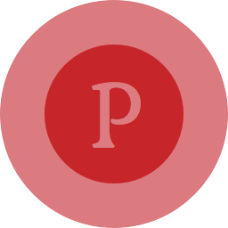

Course Run
Course Search & Filter Engine for
University of Toronto students.November 2011 - August 2012
Founder & Developer
Torbok
Book Trading Network for students studying at
Universities across Greater Toronto Area.May 2013
Founder & Developer
University of Toronto Squash Club
Presentational website and social network for a squash club at University of Toronto.
February 2011 - December 2012 & October 2013
Voluntary Developer
oneminute.js
An open source (BSD) JavaScript library which converts integer timestamps to meaningful text conveying time differences, and/or dates.
December 2012 - May 2013
Creator
- 
PopScript
HTML5 library for creating modal boxes, lightboxes, dropdown menus, tooltips, and any other dynamic element, with support for animations, lightweight with zero dependencies. (MIT licensed)
March 2013 - March 2014
Creator
Cook
A BSD licensed open source JavaScript library providing functions to facilitate easier creation of DOM elements, on the browser side.
November 2012 - June 2013
Creator